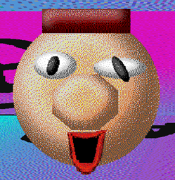
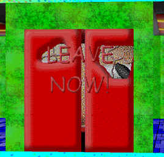

"PlacedHead" (or just "PH") is the PlaceFace replacement in the newest "Sticky in: Fun with Numbers!"(/"SIFWN") games.
Aliases
PlacedHead, PH, Placed Head.
Appearance
PlacedHead appears as a giant floating head. He has a brown brick on his head that is meant to be hair, a large hexagon-shaped nose, a small open mouth with red lips, and two misshapen eyes. His mouth looks just like Baldi's mouth.
Gallery
Paint.net SIFWN

Sticky in: Gardening!

Trivia
PlacedHead lives in the "Placeholder House" behind Sticky's School with the other Placeholder Faces.